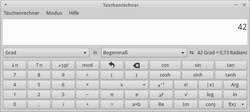
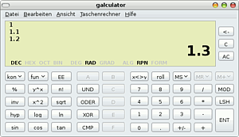
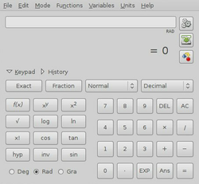
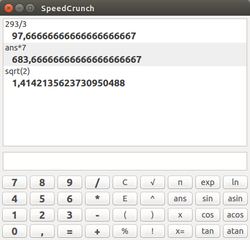
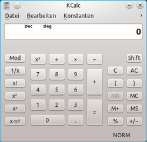

Taschenrechner
Zum Verständnis dieses Artikels sind folgende Seiten hilfreich:
Es kommt sicherlich ab und zu vor, dass man vor dem Computer sitzt und "mal schnell" etwas nachrechnen oder ausrechnen möchte oder muss. Dafür immer einen Taschenrechner in Reichweite zu haben oder gar eine Tabellenkalkulation zu starten, ist für viele Rechnungen auch nicht notwendig, da diverse Programme zur Verfügung stehen.
Unity, GNOME, Xfce, LXDE¶
Calculator¶

Der Taschenrechner von Unity und der Desktop-Umgebung GNOME ist Calculator  (früher Gcalctool). Er ist in der Standardinstallation von Ubuntu und Xubuntu bereits enthalten. Alternativ kann man ihn über das folgende Paket installieren [1]:
(früher Gcalctool). Er ist in der Standardinstallation von Ubuntu und Xubuntu bereits enthalten. Alternativ kann man ihn über das folgende Paket installieren [1]:
gnome-calculator
 mit apturl
mit apturl
Paketliste zum Kopieren:
sudo apt-get install gnome-calculator
sudo aptitude install gnome-calculator
Gestartet wird der Rechner unter Unity über die Eingabe von "Taschenrechner", bei Ubuntu-Varianten mit einem Anwendungsmenü über "Zubehör → Taschenrechner".
Genau genommen handelt es sich nicht nur um einen Rechner, sondern um vier:
"Standard"
"Erweitert"
"Finanztechnisch"
"Wissenschaftlich"
Die Art des Rechners lässt sich im Menü "Ansicht" auswählen. "Standard" ist dabei ein sehr einfacher Rechner, der nur die vier Grundrechenarten beherrscht, "Erweitert" kennt einige zusätzliche Funktionen wie Wurzel ziehen, Quadrieren, Klammern etc. und besitzt auch einen Speicher. Der Rechner "Finanztechnisch" ist im Vergleich zum "Erweitert"-Rechner um neun finanztechnische Funktionen ergänzt. Der "Wissenschaftlich"-Rechner hat eine Vielzahl von wissenschaftlichen Funktionen wie Winkelfunktionen, Logikverknüpfungen, vier verschiedene Zahlensysteme (welche auch ineinander konvertiert werden können) u.v.m. Außerdem kann man Konstanten definieren und benutzerdefinierte Funktionen ablegen.
Alle Rechner können entweder über die Maus bedient werden (durch Anklicken der entsprechenden Tasten) oder über die Tastatur, wobei quasi jede Taste einer Standardtastatur mit einer Funktion oder einem Befehl belegt ist. Die Tastaturbelegung ist im Detail unter "Hilfe -> Hilfe" (oder alternativ F1 ) unter dem Punkt "Kurzreferenz: Tastaturbefehl" ausgeführt. In der Hilfe findet sich unter dem Punkt "Verwendung" auch eine Erklärung zu allen in den verschiedenen Rechnern verfügbaren Funktionen.
Galculator¶
Ein weiterer GTK-basierender Taschenrechner ist Galculator , der unter Lubuntu bereits vorinstalliert ist. Zu seinen wichtigsten Fähigkeiten zählen:

Einfacher Modus
Wissenschaftlicher Modus (auf dem Screenshot zu sehen)
Verschiedene Zahlensysteme (DEC/HEX/OCT/BIN)
Verschiedene Winkeleinheiten (DEG/RAD/GRAD)
Verschiedene Notationsmethoden (Algebraisch, UPN (Umgekehrte Polnische Notation), Formeleingabe)
Benutzerdefinierte Konstanten und Funktionen
Er kann über das folgende Paket installiert werden [1]:
galculator (universe)
mit apturl
Paketliste zum Kopieren:
sudo apt-get install galculator
sudo aptitude install galculator
Gestartet wird der Rechner über den Eintrag "Zubehör -> Galculator". Der Taschenrechner kann über die Tastatur (es stehen viele Tastenkombinationen zur Verfügung) oder mit der Maus bedient werden. Weiter können alle Farben, Funktionen, Konstanten, Tausendertrennzeichen usw. über das Menü "Bearbeiten -> Einstellungen" eingestellt werden. Der Notationsmodus, z.B. RPN, kann über "Taschenrechner -> Notationsmodus" gewechselt werden. Eine umfassende Dokumentation ist auf der Projektseite zu finden.

Qalculate¶
Qalculate! ist ein umfangreiches Berechnungstool und in den offiziellen Paketquellen enthalten. Die Software arbeitet mit Ausdrücken und Funktionsdefinitionen. Die Interpretation ist flexibel und fehlertolerant. Eine Autovervollständigung hilft bei der Auswahl der Befehlssyntax, was die Arbeit sehr leicht und effizient macht. Qalculate! besitzt eine Schnittstelle zu externen Werkzeugen wie z.B. Gnuplot, um Funktionen zu plotten.
Neben Zahlen und arithmetischen Operatoren, kann ein Ausdruck eine beliebige Kombination von Variablen, Einheiten und Funktionen beinhalten. Viele Naturkonstanten sind bereits implementiert, es ist möglich eigene Konstanten und Einheiten zu definieren. Gerade das automatische Umrechnen diverser Einheiten macht die Software im Bereich der naturwissenschaftlich und technischen Berechnungen praktisch.
Das Programm kann über das folgende Paket installiert werden [1]:
qalculate-gtk (universe)
mit apturl
Paketliste zum Kopieren:
sudo apt-get install qalculate-gtk
sudo aptitude install qalculate-gtk
Bei Ubuntu-Varianten mit einem Anwendungsmenü erfolgt der Start über den Eintrag"Bildung -> Qalculate!". Die Programmoberfläche ist neben Englisch auch in Niederländisch oder Schwedisch verfügbar (eine deutsche Übersetzung fehlt bisher).

SpeedCrunch¶
SpeedCrunch  ist eine sehr mächtige und einfach zu bedienende Rechneranwendung, die viele Komfortfunktionen besitzt, unter anderem die Anzeige des Verlaufs und die automatische Verwendung des vorherigen Ergebnisses (Ans) bei Eingabe eines Rechenoperators. Die Software ist für Linux, Mac OS X und Windows verfügbar und wird im Artikel SpeedCrunch genauer beschrieben.
ist eine sehr mächtige und einfach zu bedienende Rechneranwendung, die viele Komfortfunktionen besitzt, unter anderem die Anzeige des Verlaufs und die automatische Verwendung des vorherigen Ergebnisses (Ans) bei Eingabe eines Rechenoperators. Die Software ist für Linux, Mac OS X und Windows verfügbar und wird im Artikel SpeedCrunch genauer beschrieben.
KDE¶
KCalc¶

Kubuntus Taschenrechner heißt KCalc und ist in der Standardinstallation enthalten. Ansonsten kann man das Programm nachinstallieren [1]:
kcalc (universe)
mit apturl
Paketliste zum Kopieren:
sudo apt-get install kcalc
sudo aptitude install kcalc
Der Taschenrechner wird über "K-Menü -> Dienstprogramme -> KCalc (Wissenschaftlicher Taschenrechner)" aufgerufen.
KCalc bietet alle Möglichkeiten eines wissenschaftlichen Taschenrechners, wie trigonometrische Funktionen, logische Operatoren und statistische Berechnungen und einen einfachen Speicherplatz. Farbe und Schriftart können angepasst werden. KCalc bietet auch eine große Fülle vordefinierter Tastaturkürzel für die einzelnen Funktionen.
KRunner¶
Eine weitere Möglichkeit zur Lösung einfacher Rechenaufgaben bietet der Dialog "Befehl ausführen". KRunner ist entweder im K-Menü oder über das Tastenkürzel Alt + F2 zu erreichen.
Dort kann in das Feld "Befehl" eine Rechenaufgabe wie z.B. 2+5*6 eingegeben werden. Bei Betätigung des "Ausführen"-Buttons wird das Ergebnis berechnet und in dem Eingabefeld angezeigt. Es sind folgende Rechenzeichen möglich: + (Addition), - (Subtraktion oder Negation), * (Multiplikation), / (Division) und ^ (Potenzierung).
Terminal¶
Alternativ zu den Taschenrechnern, welche in die Desktop-Oberflächen integriert sind, bietet Ubuntu auch diverse Möglichkeiten, im Terminal Berechnungen anzustellen.
bc¶
bc ist ein Rechenprogramm für das Terminal, das standardmäßig installiert ist, aber auch mit dem folgenden Paket installiert werden kann [1].
bc
mit apturl
Paketliste zum Kopieren:
sudo apt-get install bc
sudo aptitude install bc
Gestartet wird bc im Terminal [2] über folgenden Aufruf:
bc
Dann erscheint ein Eingabe-Prompt, an dem man die Berechnung eingeben kann. Dazu gibt man einfach die gewünschte Berechnung ein, z.B.
5*6
drückt ⏎ und erhält das Ergebnis
30
Möchte man den Rechner verlassen, so gibt man
quit
ein.
bc ist eigentlich wesentlich mehr als ein einfacher Taschenrechner, da bc sehr viele Funktionen bietet und voll programmierbar ist, inkl. Bedingungen, Schleifen etc. Einen guten Einblick gibt die (englischsprachige) Manpage zu bc.
bc rundet nicht. So erhält man bei Eingabe von echo 1/3*3 | bc -l als Ergebnis .99999999999999999999 anstatt „1“.
dc¶
dc ist der zweite Rechner für das Terminal, welcher standardmäßig installiert ist. Ansonsten kann dc über das folgende Paket installiert werden [1].
dc
mit apturl
Paketliste zum Kopieren:
sudo apt-get install dc
sudo aptitude install dc
dc verwendet als Eingabemethode die Umgekehrte Polnische Notation (kurz UPN), wie von HP-Taschenrechnern verwendet wird. dc wird im Terminal [3] mit dem Befehl
dc
gestartet. Danach erscheint der Eingabe-Prompt. Wie bei der UPN üblich muss man zuerst zwei Zahlen in den Stack geben und anschließend die gewünschte Rechenoperation. Beispiel:
4 # Return drücken 5 # Return drücken * # Return drücken
Nach der Eingabe der Rechenoperation erscheint erst einmal kein Ergebnis, da dieses auch im Stack gespeichert ist. Abrufen kann es durch die Eingabe von
p # und Return drück
20
Auch dc hat einen erheblichen Funktionsumfang und kann zudem Makros verarbeiten. Weitere Informationen findet man in der Manpage oder auf den Infoseiten zu dc.
Möchte man den Rechner verlassen, so gibt man
quit
ein.
Hinweis:
Wer eine negative Zahl in dc eingeben möchte, muss dies per Unterstrich _ machen und darf kein Minus - voranstellen, da das Minus in dc für eine Binäroperation verwendet wird. Minus Fünf ist also z.B. durch "_5" einzugeben.
Befehlszeile¶
Die Bash (Standard interaktive Shell unter Ubuntu) kann auch "von Hause aus" einfache Rechnung mit ganzen Zahlen durchführen, d.h. ohne ein zusätzliches Programm, und zwar mit Hilfes des Befehls expr. Dazu ein paar Beispiele:
expr 5 + 6 # Addition expr 10 - 5 # Subtraktion expr 10 / 2 # Division, das Ergebnis wird immer ganzzahlig dargestellt expr 10 % 3 # gibt den Rest (nur Nachkommastellen) der Division aus expr 2 \* 5 # Multiplikation, das Mal-Zeichen * muss (!) mit dem Backslash \ maskiert werden, sonst gibt expr einen Fehler aus
Wichtig ist dabei, daß zwischen Zahl und Rechenoperation immer ein Leerzeichen steht (außer zwischen \ und *), da expr sonst einen Fehler meldet.
Außerdem kennt expr noch einige Vergleichsoperationen und Logikverknüpfungen. Eine kurze Übersicht liefert
expr --help
Firefox¶
Für den Firefox gibt es verschiedene Taschenrechner-Erweiterungen. Diese findet man, wenn unter Extras -> Add-ons" auf "Erweiterungen herunterladen" klickt und dann auf der erscheinenden Seite als Suchbegriff "calculator" eingibt. Als Ergebnis erhält man diverse Taschenrechner-Erweiterungen mit unterschiedlichem Funktionsumfang.
Hier sei nur kurz die Erweiterung "Status-Bar Calculator" erwähnt, welche sich in die Statuszeile des Firefox integriert und so jederzeit ohne Umweg über ein Menü erreichbar ist. Diese Erweiterung kann man hier herunterladen.
Weitere Taschenrechner¶
In den offiziellen Paketquellen zu Ubuntu findet man ein Vielzahl von weiteren Taschenrechnern von einfach bis komplex, teilweise auch Emulatoren "klassischer" Taschenrechner. Am einfachsten findet man die Rechner, indem man in der Paketverwaltung das Wort "calculator" per Volltextsuche (Name + Beschreibung) suchen lässt. Die Rechner können wie gewohnt über die Paketverwaltung installiert werden [1].
Tastenkürzel zum Aufrufen des Taschenrechners¶
Manche Tastaturen haben eine Taste über dem Ziffernblock, mit dem man unter Windows den Taschenrechner aufrufen kann. Wenn man die Taste (oder eine Tastenkombination) jedoch einfach mit einem Taschenrechner-Programm belegt, öffnet sich bei jeder Betätigung ein neuer Taschenrechner.
Dazu muss das folgende Paket installiert werden:
wmctrl (universe)
mit apturl
Paketliste zum Kopieren:
sudo apt-get install wmctrl
sudo aptitude install wmctrl
Durch folgendes Skript wird der aktuell geöffnete Taschenrechner (hier KCalc) bei Bedarf geöffnet und in den Vordergrund gebracht:
1 2 3 4 5 6 7 | #!/bin/bash if [ `wmctrl -l | grep -c "KCalc"` != 0 ] then wmctrl -F -R "KCalc" else kcalc fi |
Links¶
Free42
- HP-42S für zahlreiche BetriebssystemeTiLP - Taschenrechner von Texas Instruments ansteuern
NumericalChameleon - kein Taschenrechner, aber ein sehr komfortabler Einheiten-Umrechner
- Erstellt mit Inyoka
-
 2004 – 2017 ubuntuusers.de • Einige Rechte vorbehalten
2004 – 2017 ubuntuusers.de • Einige Rechte vorbehalten
Lizenz • Kontakt • Datenschutz • Impressum • Serverstatus -
Serverhousing gespendet von